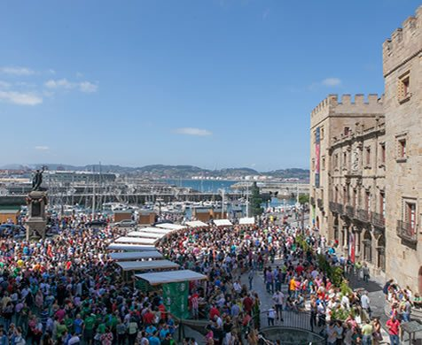

Gijón (en asturiano: Xixón) es una ciudad española, con la categoría histórica de villa,6 capital del concejo del mismo nombre. Está situada a orillas del mar Cantábrico en la costa del Principado de Asturias, comunidad autónoma de la que es su municipio más poblado con 271 843 habitantes.
Gijón es, además, una parroquia del concejo, cuya única entidad singular de población es la localidad homónima, y es conocida por antonomasia como la capital de la Costa Verde. Por la ciudad discurre el Camino de Santiago en su ruta costera, declarado Patrimonio de la Humanidad por la UNESCO.
Geográficamente se localiza en la zona central-septentrional de Asturias, a 28 km de Oviedo y 26 km de Avilés, formando parte de una gran área metropolitana que abarca veinte concejos del centro de la región, vertebrada con una densa red de carreteras, autopistas y ferrocarriles y con una población de 835.053 habitantes en 2011, que la convierten en la séptima de España. A escala nacional se sitúa en la parte central de la cornisa cantábrica y a nivel europeo en la zona sur del Arco Atlántico.
Desde su fundación en el siglo V a. C. hasta fechas recientes, había sido una población eminentemente industrial, lo que favoreció su gran desarrollo y crecimiento durante el siglo XX. No obstante, durante los últimos años la crisis de la siderurgia y el sector naval ha supuesto la reconversión de su tejido productivo, lo que ha transformado la ciudad en un importante centro turístico, universitario, comercial y de I+D+i.
En el concejo tienen su sede el Consejo Consultivo del Principado de Asturias, la Radiotelevisión del Principado de Asturias y el Centro de Seguridad Marítima Integral de Salvamento marítimo.
Volver al indiceEl origen del nombre de Gijón suscita desde hace tiempo un intenso debate entre los estudiosos. En fecha tan temprana como 1899, Miguel de Unamuno emitió ya su opinión, según la cual la palabra provendría del latín saxum ‘peñasco’, lo cual tendría relación con las características geográficas del emplazamiento de la ciudad, cuyo núcleo primitivo se asentó en el gran promontorio que hoy se denomina Cerro de Santa Catalina y en el que se ubica el casco histórico de Cimadevilla. Otras interpretaciones de la época buscan el origen del término en voces celtas como:
Basándose en el primitivo carácter de Gijón como asentamiento militar, Sánchez propone la palabra sessio, que aparece en expresiones como sessio legionis o in sessione legionum, teoría que reforzaría la presencia de unas ‘aras sestianas’ o ‘aras sessianas’ que algunos autores sitúan en la Campa Torres y Sánchez interpreta como ‘aras de la sessio’ o ‘aras sessianas’, es decir, ‘aras gijonesas’. Otras explicaciones han buscado el origen del término en antropónimos como gegionus, gegion, segius (según Manzanares); sassonius (según Schulze) o hipotéticos *iaionus, *ieionus (según García Arias). Por otra parte, según sostiene el filólogo Xosé Lluis García Arias, la enormemente popular identificación de Gijón con la Gigia, citada por Ptolomeo, en realidad no tendría nada que ver con la urbe asturiana sino que correspondería a una población situada en lo que hoy es territorio leonés, quizá próxima al río Cea.
Volver al indiceEn Gijón se sitúan centros docentes de dos universidades, la Universidad de Oviedo y la Universidad Nacional de Educación a Distancia.
El campus de Gijón de la Universidad de Oviedo, que se ubica en las parroquias de Somió, Cabueñes y Bernueces, sobre fincas de la antigua Universidad Laboral de Gijón, incluye los siguientes centros docentes:
Gijón cuenta también con la delegación de la UNED en Asturias, donde se pueden cursar a distancia distintas disciplinas.
Volver al indiceEl Camino de Santiago del Norte (ó Camino de la Costa) tras abandonar el concejo de Villaviciosa, discurre a lo largo de 19 km por el de Gijón/Xixón, hasta el límite con Carreño. En el km. 3 se encuentra el actual albergue de peregrinos (servicio que ofrece el Camping de Deva). A partir de este lugar, la ruta oficial transcurre por las parroquias de Cabueñes y Somió hasta el río Piles, donde se le une la ruta alternativa de la Senda del Peñafrancía, que habremos podido tomar al poco de salir del Camping de Deva. Atravesada la ciudad durante 7 km, el Camino continúa por Veriña y asciende hacia Puao y Monte Areo, entrando en el Concejo de Carreño. En 2018 comenzará a ofrecer sus servicios al peregrino el nuevo albergue, instalado en el palacete Casa Paquet, en pleno dentro de la ciudad (Muelle deportivo).
| Distrito | Barrios | Parroquia | Población | Parroquia | Población | Parroquia | Población |
|---|---|---|---|---|---|---|---|
| Centro | Centro, Cimadevilla y Laviada | Baldomón | 182 | Fresno | 592 | Porceyo | 680 |
| Este | La Arena, El Bibio, Las Mestas, Viesques, El Coto y Ceares | Cabueñes | 1423 | Granda | 669 | Ruedes | 124 |
| Llano | El Llano | Caldones | 424 | Huerces | 323 | Santurio | 266 |
| Sur | Pumarín, Montevil, Contrueces, Polígono de Pumarín, Perchera-La Braña, Nuevo Gijón, Santa Bárbara y reconversión | Castiello Bernueces | 1075 | Lavandera | 359 | Serín | 290 |
| Oeste | La Calzada, Jove, Tremañes, Natahoyo, Moreda y Veriña | Cenero | 1432 | Leorio | 418 | San Andrés | 165 |
| Rural | Baldornóm, Bernueces, Cabueñes, Caldones, Cenero, Deva, Fano, Fresno, Granda, Huerces, La Pedrera, Lavandera, Leorio Poago, Porceyo, Ruedes, San Andrés de los Tacones, Santurio, Serín, Somió y Vega | Deva | 695 | La Pedrera | 740 | Vega | 3508 |
| Fano | 213 | Poago | 211 | Veriña | 541 |
Autor: Pablo Salgado González